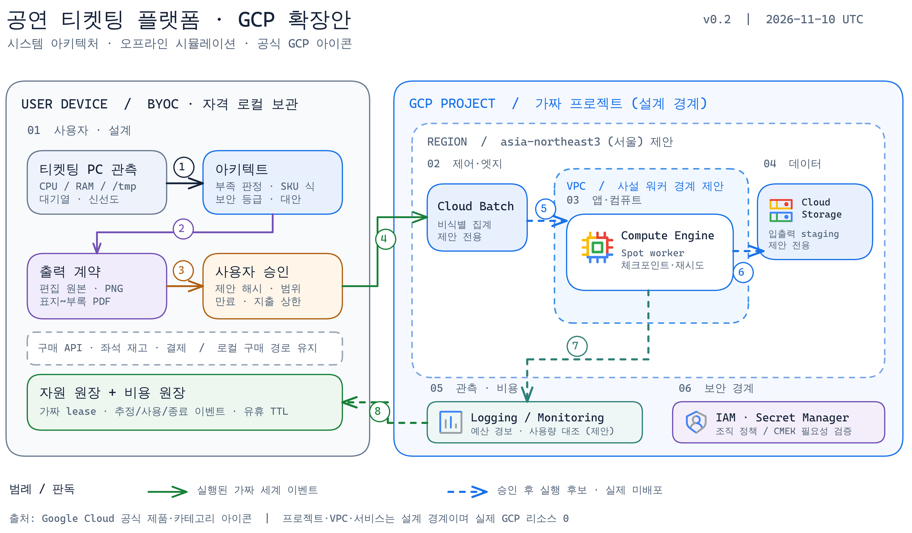

용량 부족 관측부터 비용 근거·보안 경계·사용자 승인·유휴 종료까지
오프라인 시뮬레이션 샘플
실 GCP 호출 0
v0.2 · 2026-11-10 UTC
견적 금액 미산정
실제 비용 승인 없음
설계·출력 검증만 수행
이 문서는 가짜 세계 실행 기록을 근거로 만든 설계 예시다. Google Cloud 프로젝트·VPC·서비스 박스는 승인 전 아키텍처 후보이며 실제 배포 증거가 아니다.
공연 티켓팅 플랫폼의 구매 경로는 로컬에 유지하고, 비식별 이벤트 집계·리포트 생성만 Batch·Spot 후보로 둔다. 가짜 세계에서는 승인 검증, 프로젝트 이벤트, 원장 lease, 유휴 종료만 실행했다.
상태: 배포되지 않음 · 실제 청구 없음 · 실제 SKU 조회 없음
티켓팅 설계 입력: 구매 API와 좌석 재고·결제 경로는 로컬에 유지한다. 비식별 이벤트 집계와 리포트 생성만 비동기 배치로 분리한다. 클라우드 반출 대상은 식별자 제거된 집계 이벤트이며, 데이터 등급은 internal다.
사용자 PC의 CPU·메모리·/tmp 가용량과 기존 작업 대기열이 작업 요구량보다 부족할 수 있다. 새 수집기 없이 기존 신호를 읽고, 결측·오래된 값은 확장 근거로 쓰지 않는다.
| 설계 문 | 검증할 사실 | 실패 시 |
|---|---|---|
| 용량·작업 적합성 | CPU/RAM/디스크/대기열·재시도 가능성·데이터 분류 | 로컬 유지 또는 재측정 |
| 비용·승인 | 공식 SKU 식·사용량·리전·상한·만료·제안 해시 | 프로비저닝 차단 |
| 출력·운영 | 편집 다이어그램·PNG·PDF 필수 절·원장·유휴 종료 | 승인 요청 차단 |

| # | 출발 → 도착 | 상태·검증 |
|---|---|---|
| 1 | 기존 관측 → 아키텍트 | 실측 축·신선도 확인 |
| 2 | 아키텍트 → 편집 원본·PDF | 산출물 형식 검증 |
| 3 | 산출물 → 사용자 | 제안 해시·지출 범위 승인 |
| 4 | 승인 → 가짜 프로젝트 | 시뮬: 승인 뒤에만 생성 |
| 5 | Batch → Spot 워커 | 제안 전용, 실제 미배포 |
| 6 | 워커 → Storage staging | 제안 전용, 실제 전송 0 |
| 7 | 워커 → 관측 서비스 | 제안 전용, 비용·로그 설계 |
| 8 | 관측 → 로컬 원장 | 제안 전용, 실 시뮬은 로컬 이벤트 |
| 등급 | 기본 구성·승인 문 |
|---|---|
| 공개 | 작업별 최소권한, 인증 진입, 관리 활동 로그. 샘플 입력은 이 등급. |
| 내부 | 프로젝트 분리, Secret Manager 개별 접근, 비공개 진입·리전 정책 확인. |
| 기밀 | VPC/PSC 지원 경로, CMEK 가능 서비스·키 책임, Data Access 로그·조직 정책 검증. |
| 제한/미분류 | 로컬 유지. 별도 반출 승인·정책·감사 증거 없으면 클라우드 차단. |
기본 리전: asia-northeast3 (서울). 비교 리전: us-central1 (아이오와). 동일 사용량에 리전별 공식 SKU 단가와 이그레스·데이터 위치·지연을 대입해 비교한다. 단가 조회 전 우열·금액은 미산정.
월 금액: 미산정. 실제 SKU 단가·사용량·청구 통화·세금·지역·조회 시각이 확보되어야 숫자를 계산한다.
| 비용 항목 | 현재 샘플 근거 | 실행 전 필요한 값 |
|---|---|---|
| Spot 워커 | 재시도 가능 작업 가정 | 리전별 공식 SKU·예상 시간 |
| Storage·network | 설계 후보 | GiB·보존기간·이그레스 |
| Logging·Monitoring | 관측 설계 | 수집·보존량과 가격 |
공식 Compute Engine 가격 문서와 Cloud Billing Pricing API의 단위·구간·리전을 대조한다. 공개 고정 가격이나 절감률은 약속하지 않는다.
| 후보 | 채택/거절 기준 |
|---|---|
| 로컬 정리·대기열 조절 | SLA를 만족하면 우선 유지 |
| Batch + Spot | 재시도 가능, 중단 허용 때 후보 |
| 일반 VM / Cloud Run | 선점 불가 / 짧은 HTTP 요청 시 비교 |
| GKE Autopilot | Kubernetes 제약이 지속될 때 총비용 재계산 |
| ID | 결정 | 남은 검증 |
|---|---|---|
| DR-1 | 비동기 재시도 작업에 Batch + Spot을 후보로 둔다. | 체크포인트·중단 허용도 |
| DR-2 | 사용자 승인 전 과금 가능 동작 0. | 실 어댑터 별도 리뷰 |
| DR-3 | 편집 원본·PNG·PDF 검증 뒤 승인 요청. | 실 입력과 문서 일치 |
| DR-4 | 예산 경보는 지출 차단 장치로 취급하지 않는다. | 잔여 자원·유휴 종료 관측 |
설계 입력 요구: 좌석 예약과 결제는 멱등 키로 중복 처리를 막는다
구매 경로와 분석 배치의 장애 영역을 분리한다
집계 작업은 재시도·체크포인트 가능하고 사용자 요청 지연에 영향을 주지 않는다
입력 설계 SHA-256: 4c7c693ad20d51a22fee6b808c94da303d212735fb431e92869f0d7fa8934858 · 제안 ID: ticket-demo-4c7c693ad20d · 입력 출처 선언: synthetic-ticket-design-fixture
샘플 파일: architecture.excalidraw, architecture.png, architecture-design.html, architecture-design.pdf, fake-world.json. 편집 원본과 PNG는 diagram-master의 Excalidraw 경로, PDF는 기존 HTML→PDF 경로로 생성했다.
가짜 세계 결과: 무승인 실행 차단, 가짜 프로젝트 1, 비용 이벤트 3, 종료 후 활성 lease 0, 실제 GCP 호출 0.
Google Cloud 제품 아이콘: https://cloud.google.com/icons
Google Cloud 참조 아키텍처: https://docs.cloud.google.com/architecture/blueprints/enterprise-application-blueprint/architecture
AWS 공식 아키텍처 아이콘 스타일 참고: https://aws.amazon.com/architecture/icons/
Compute Engine 가격: https://cloud.google.com/compute/all-pricing
Cloud Billing Pricing API: https://docs.cloud.google.com/billing/docs/how-to/get-pricing-information-api
공식 리전 목록: https://docs.cloud.google.com/compute/docs/regions-zones
시각 표기 방식만 참조했다. AWS 아이콘은 사용하지 않았다.